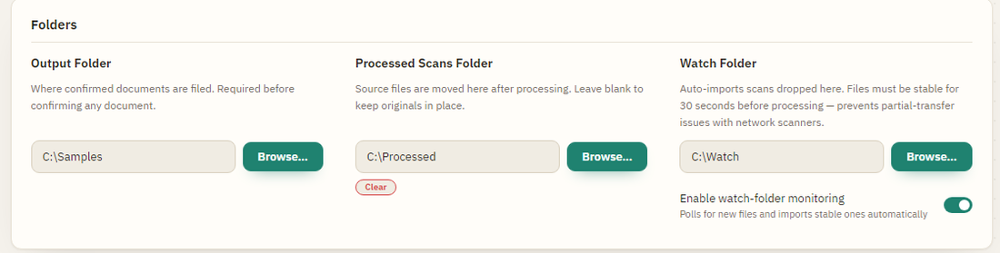
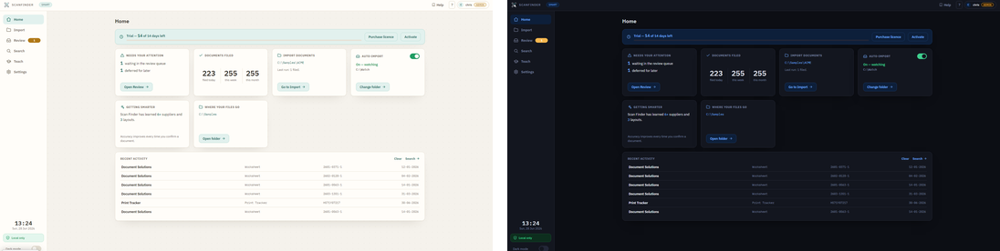

Settings & Help
Settings let an admin tailor how Scan Finder works. Most people rarely need to change anything — but here are the settings you're most likely to touch, plus where to find help.
Settings are available to admins. If you don't see the Settings button, your account doesn't have permission — ask whoever set up Scan Finder for you.
How Settings is organised
Settings is split into clearly-named tabs. The everyday ones are at the top; admin tools are below a divider. Most have a sensible default — you rarely need to change anything.
- Files & filing — your folders (where scans come from and where filed documents go) and how files are named.
- Document Types — the kinds of document you handle and their fields.
- Processing — how scans are read: speed vs accuracy, plus the automatic helpers below.
- Appearance — the colour theme, which Home-screen cards show, and how the window behaves.
Admin tools sit below: Templates & learning, Users & activity, Licensing and Advanced.
Files & filing
The folders Scan Finder works with. Only the Output Folder is required.

Processing
How Scan Finder reads your scans. Sensible defaults — change these only if you want to:
- Auto-file 100%-confidence documents — when a document is read with full confidence, Scan Finder files it automatically and skips Review. You still review anything less certain.
- Auto-rotate sideways or upside-down scans — detects a page scanned the wrong way up and turns it upright — for reading and in the filed PDF. It only acts when it's confident; pages it isn't sure about are left as-is.
- Read values that wrap onto the next line — joins a value that continues on the line below, such as a long address.
- Name checks — flags an odd-looking supplier or customer name for a quick look rather than filing it silently. A real name that gets flagged just needs confirming — that teaches it.
- Confidence threshold — documents with any field below this are sent to Review for a check.
- Performance / threads — how many documents to work on at once. More can speed up large imports on a capable computer; the default is safe.
Appearance
- Colour theme — six themes, light and dark, applied to the whole app.
- Home screen — tick which cards appear on your Home dashboard (Quick find, Documents filed, Storage, Backup…). Turn off any you don't use — the change applies straight away.
- Window behaviour — whether closing the window minimises Scan Finder to the tray (so watch-folder import and remote search clients keep running) or fully quits it. Exit from the tray icon's right-click menu.

Bigger setup areas have their own guide pages: Document Types & Fields (turn types on/off, add fields, add from the catalog) and Output Structure (how documents are named and foldered, found under Files & filing). The layouts Scan Finder has learned live under Templates & learning.
Admin & advanced settings
Below the divider. You can safely leave these alone, but a few are genuinely useful:
- Advanced → Backup & Restore — export your whole setup (settings, document types, fields and everything Scan Finder has learned) to a single password-protected file, and restore it after a reinstall or on a new computer. A reassuring safety net; the file is encrypted, so keep the password somewhere safe. The Home screen's Backup card shows when you last did this.
- Advanced → Re-run setup — opens the first-time setup wizard again.
- Templates & learning → Keyword Label Overrides — teach extra words that mean the same as a field's label, per document type (for example, if your invoices say “Our ref” instead of “Reference”). Optional and advanced — most people never need it.
- Users & activity — add staff accounts (admin / edit / read-only) and review the activity log of what's been done.
Activation & licensing
Scan Finder runs on a free trial or a paid licence, tied to this computer, and works fully offline. The Activation area shows your current status. If you're unsure about your licence, ask whoever set up Scan Finder for you.
Where to find help
Scan Finder has help built in, in three forms:
- User Guide — this guide. Open it from the User Guide button, the card on the home screen, or the Help button at the top of the main window.
- Quick explanations — the ? help mode, described below.
- Troubleshooting — common problems and fixes are on the Troubleshooting & FAQ page.
The "?" help mode
This is the quickest way to learn what a button does without leaving what you're doing.
- Click the ? button at the top of the window. The pointer changes to show help mode is on.
- Click any control — a button, a field, a badge.
- A short explanation pops up. Help mode then switches off automatically.
- Press Esc or click away to dismiss the explanation.
Help mode is available on the main window and other screens that show a ? button.
Run into something unexpected? The Troubleshooting & FAQ page has quick answers.